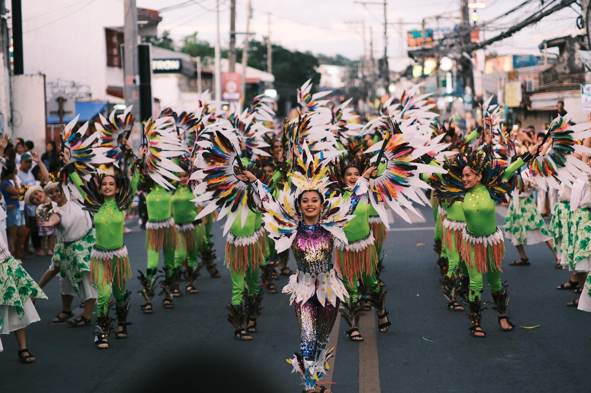

So... What is MORONG❓
Morong, officially the Municipality of Morong, is a 1st class municipality in the province of
Rizal Province in the Philippines.
According to the 2020 census, it has a population of 65,758 people.
The town played an important role during the Philippine Revolution and hosted the capital of the First Philippine Republic for a time.
LEARN MORE
The town’s origins date back to January 16, 1572, when Spanish captain Juan Maldonado arrived at a thriving riverside settlement and named it Moron after a town in Spain.
The community was later Christianized by Franciscan missionaries Juan de Placencia and Diego de Oropesa beginning in 1578, establishing chapels and forming the settlement known as Pueblo de Moron, which later became Morong.
Over time, nearby communities such as Pililla and Binangonan separated and became independent towns.
A native of the town, Tomas Mateo Claudio, became the first Filipino soldier to die in World War I while serving with the U.S. Marine Corps.
During World War II, local guerrillas destroyed the old Morong Bridge to slow Japanese forces occupying the area.
Later, Filipino troops and resistance fighters successfully liberated Morong from Japanese control before the end of the war.
Sanrok sa Ringring Festival

Morong folks use the Tagalog dialect with a singsong accent that is very contagious.
Words, phrases, terms, and expressions that are not in the Tagalog dictionary have been embedded for many years in the eccentric vocabulary of the Moronguenos.
Morong’s barrio folks have their version of the town’s vocabulary. This macroculture of everyday conversation also is different from nearby towns.
The most common observation is in the use of the letter “R.” Words that carry the letter “D” are substituted with letter “R”, as in ringring (wall) for dingding, sanrok (ladle) for sandok, and so on.
A sour soup featuring catfish, a local specialty.
A signature, slightly crispy fried noodle dish.
Shrimp cooked in coconut milk.
a rare, flavorful heirloom sour stew from Morong, Rizal, Philippines, featuring small freshwater shrimps and local vegetables in a creamy, umami-rich broth.